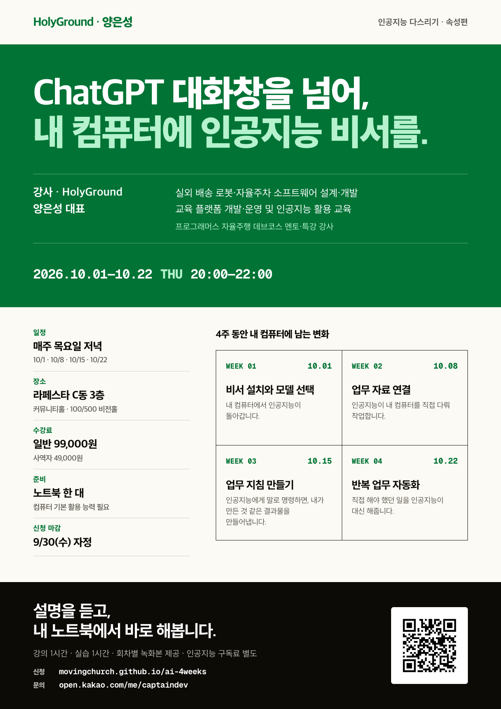

내가 잘 아는 일에서 하나를 고릅니다.
자주 반복하면서 필요한 자료와 좋은 결과의 기준을 설명할 수 있는 업무를 정합니다.
평소 쓰는 업무 자료를 가져와 직접 실습합니다. 프로그램을 설치하고 작업 공간을 설정하는 단계부터, 내가 하던 일을 인공지능에게 맡기는 방법까지 함께 배웁니다.
강사가 이 강의를 준비하며 직접 진행한 과정입니다.
인공지능이 과정 내용, 일정, 가격, 표현 규칙을 확인합니다.
원하는 결과와 지켜야 할 기준을 설명하고 작업을 맡깁니다.
같은 자료와 기준으로 채널에 맞는 결과물을 만듭니다.
잘못된 내용과 표현을 고치고 다음 작업에도 같은 기준을 적용합니다.
강사가 실제 업무를 인공지능에게 맡긴 사례입니다.
포스터 디자인을 따라 만드는 수업은 아닙니다. 수강생은 자신의 전문 분야에서 평소 하던 업무를 하나 선택합니다.

좋은 결과가 무엇인지는 내가 가장 잘 압니다. 그 기준을 인공지능에게 알려주고, 반복해서 해야 하는 일은 맡깁니다.
자주 반복하면서 필요한 자료와 좋은 결과의 기준을 설명할 수 있는 업무를 정합니다.
인공지능이 내 컴퓨터의 파일을 읽고 수정할 수 있도록 프로그램과 작업 공간을 설정합니다.
자료를 찾는 순서와 작업 방법, 결과를 확인하는 기준을 업무 지침으로 남깁니다.
수업 시간에 내 노트북을 직접 설정하고 평소 하던 업무 하나에 적용합니다.
회차마다 설명 1시간과 실습 1시간으로 진행합니다.
내 컴퓨터에서 실행
작업 공간 구성
내 방식대로 결과 만들기
실행 조건 설정과 결과 보고
채팅용과 작업용 인공지능의 차이를 알아보고 모델별 비용과 강점을 비교합니다. 상황에 맞는 인공지능을 고르고 작업 프로그램을 함께 설치해 실행합니다.
실습 결과 · 수강자 컴퓨터에서 동작하는 인공지능 비서
작업할 폴더, 참고할 자료, 결과물을 저장할 위치를 정합니다. 기본 작업 규칙을 만들고 필요한 경우 구글 드라이브를 연결한 뒤, 파일을 만들고 읽고 수정해 봅니다.
실습 결과 · 폴더·자료·기본 규칙을 갖춘 작업 공간
맡길 업무를 고르고 평소 처리하던 순서와 판단 기준을 업무 지침으로 만듭니다. 인공지능이 내 방식에 따라 결과를 만들도록 실행하고 검토합니다.
실습 결과 · 다시 사용할 수 있는 업무 지침
직접 실행해 본 업무가 정해진 시간이나 새 파일을 계기로 시작되도록 설정합니다. 인공지능이 처리할 부분과 사람이 확인할 부분을 나눕니다.
실습 결과 · 시작 조건과 결과 보고가 연결된 반복 업무 절차
원하는 결과가 나오는 방법을 저장한 뒤, 작업을 시작할 조건을 정합니다.
자동으로 실행하더라도 최종 사용 전에 사람이 확인해야 할 부분을 함께 정합니다.
두 서비스를 모두 결제할 필요는 없습니다. 특징과 비용을 비교해 내 업무에 맞는 인공지능을 고르는 방법을 배웁니다. 구독료는 수강료와 별도입니다.
아닙니다. 수강생마다 자신의 전문 업무에서 맡길 일을 고릅니다. 수업에서는 그 업무에 필요한 자료·도구·순서와 기준을 인공지능에게 연결하는 방법을 배웁니다.
최종 확인이 필요합니다. 결과 가운데 사람이 확인할 부분을 정하고 오류를 업무 지침에 반영하는 방법까지 함께 배웁니다.
Robotics & Autonomous Driving
Software Architect
로봇과 자동차의 소프트웨어를 설계한 경험을 바탕으로, 인공지능과 일하는 방법을 가르칩니다.
Founder & CEO
Last Mile Delivery Robot Team
Perception Part Tech Lead
Parking Team
Visual SLAM Software Architect
충북대학교 제어로봇공학